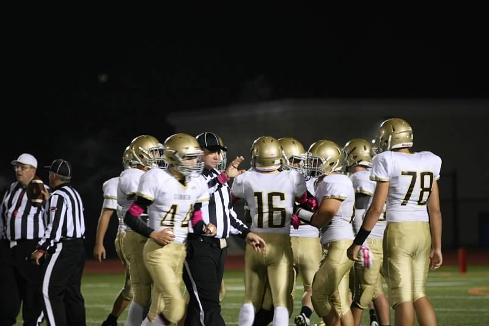
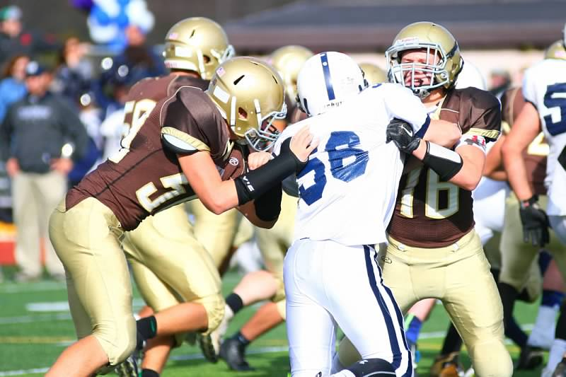

Interests
One hobby I have is being on that xbox grind. I mostly just play sports games, Madden, 2K, FIFA, but I also enjoy playing Fallout 4. I play when I can, but I am also pretty busy with school, drivers ed, and a SAT prep course.
As you can tell from the header, I play football for Stonington Highschool, that is another main hobby of mine. I am #16, I play wide receiver and linebacker.

